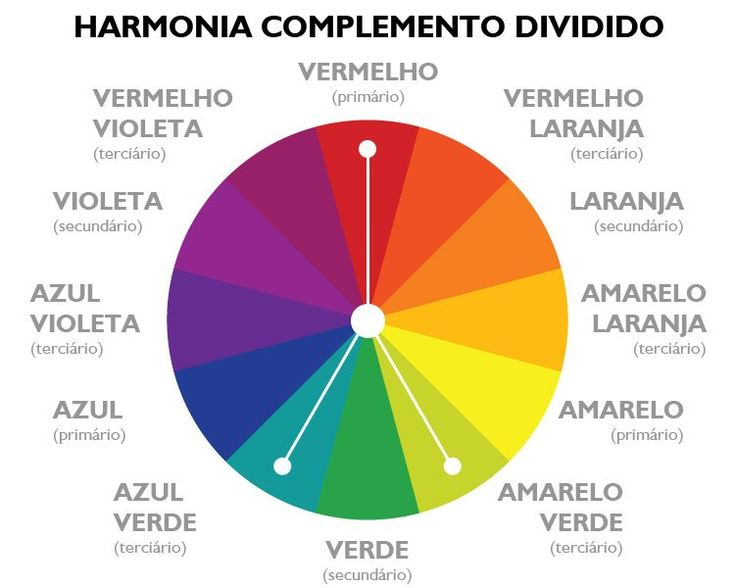
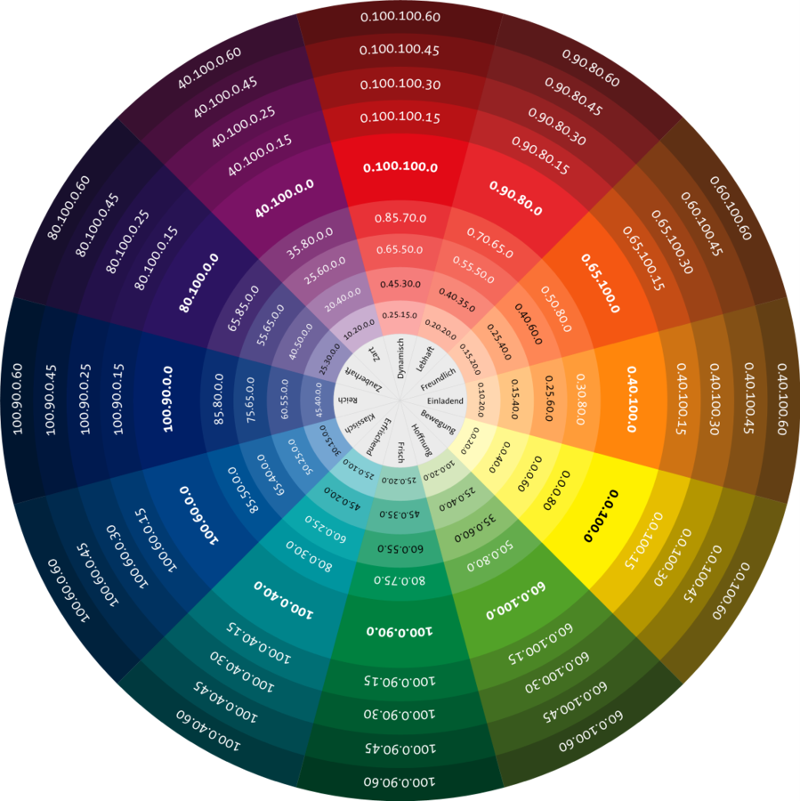

Harmonias Cromáticas no Design Gráfico
Informações Iniciais
Nome Completo: Tainá Fernanda Amorim Figueredo
Harmonia Cromática: Harmonia Complementar Dividida

O Círculo Cromático
O círculo cromático é uma representação visual das cores disponíveis, organizadas em uma sequência circular de cores puras.

Para que Cada Harmonia Cromática Pode Ser Usada
- Monocromática: Ideal para designs minimalistas e elegantes.
- Complementar: Cria alto contraste, ideal para chamar a atenção.
- Análoga: Cria uma sensação de harmonia e coesão, ideal para designs suaves.
- Triádica: Oferece um equilíbrio vibrante, ideal para designs dinâmicos.
- Complementar Dividida: Oferece contraste sem ser muito intenso, ideal para designs equilibrados.
- Quádrupla: Cria um efeito rico e complexo, ideal para designs detalhados.
Como Escolher as Cores dos Elementos do Site
A escolha das cores para os elementos do site deve seguir algumas diretrizes:
- Cabeçalhos: Use cores que se destaquem, como a cor primária da paleta.
- Parágrafos: Use cores mais neutras para facilitar a leitura.
- Bordas: Use cores sutis para não competir com o conteúdo.
- Links: Use cores que contrastem com o fundo para serem facilmente identificáveis.
- Tabelas: Use cores alternadas para facilitar a leitura dos dados.
Ferramentas para Escolher Paletas de Cores
Aqui estão algumas ferramentas úteis para escolher paletas de cores: